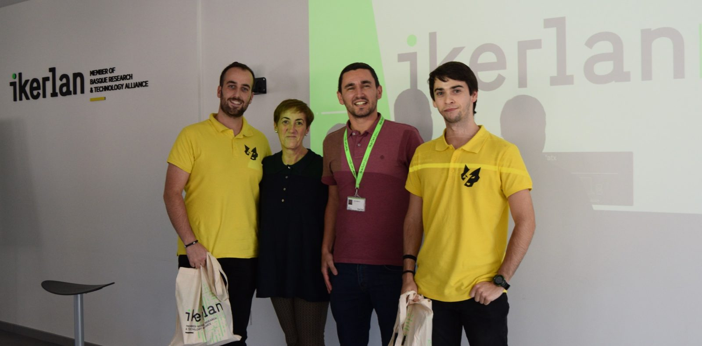

Cátedra Ikerlan de Investigación y Desarrollo
Desde 2019 reforzamos una colaboración de más de dos décadas entre el Centro Tecnológico Ikerlan y la Universidad de Oviedo.
Conocimiento, talento joven y transferencia tecnológica
La Cátedra Ikerlan-Uniovi se firmó en octubre de 2019 con el objetivo de reforzar la colaboración, ya existente durante dos décadas, entre el Centro Tecnológico del País Vasco Ikerlan y la Universidad de Oviedo.
Esta colaboración tiene como objeto la promoción del desarrollo del conocimiento, la formación de jóvenes investigadores y la transferencia de la tecnología a la sociedad. Los ámbitos de especialización se centran en tres grandes áreas:
Tecnologías de Electrónica, Información y Comunicación
Energía y Electrónica de Potencia
Fabricación Avanzada
Un centro líder en transferencia tecnológica
Ikerlan, miembro del Basque Research and Technology Alliance (BRTA), es un centro líder en transferencia tecnológica y en la aportación de valor competitivo a la industria gracias, entre otros aspectos, a la especialización de sus investigadores.
En 2018 IKERLAN logró la acreditación por parte de AENOR de su sistema de gestión integral (UNE-EN ISO 9001:2015 y UNE 166002:2014), lo que supone un reconocimiento de la excelencia del centro en el ámbito de la I+D+i. Actualmente cuenta con una plantilla de más de 300 trabajadores y anualmente invierte más de 1,5 M€ en la formación de estudiantes (6,25% de su facturación) con una media de 100 estudiantes por año, de los que aproximadamente 40 son doctorandos.

Concurso ideasCátedra-Ikerlan
Durante la visita a Ikerlan el 26 de octubre de 2022 se celebró el I Concurso de Ideas de la Cátedra Ikerlan.
¡Enhorabuena a los premiados!
Últimas noticias

La Cátedra Ikerlan de Investigación y Desarrollo inaugura su sede en el Campus de Gijón de la Universidad de Oviedo
En el acto se presentó la Convocatoria de Proyectos I+D+i 2025 financiados por la Cátedra Ikerlan, así como las posibilidades que ofrece Ikerlan a los estudiantes de la EPI de Gijón.
Leer noticiaJornada Cátedra Ikerlan 2023
El pasado 20 de septiembre de 2023 compartimos con estudiantes y profesores la Jornada Cátedra Ikerlan 2023 en la EPI.
Leer noticia
Mario Martín y Malena Potesta reciben los premios de la Cátedra Ikerlan
Premios a mejor expediente del máster en Ingeniería Mecatrónica y mejor TFG 2021/2022 en Desarrollo y Transferencia Tecnológica.
Leer noticia